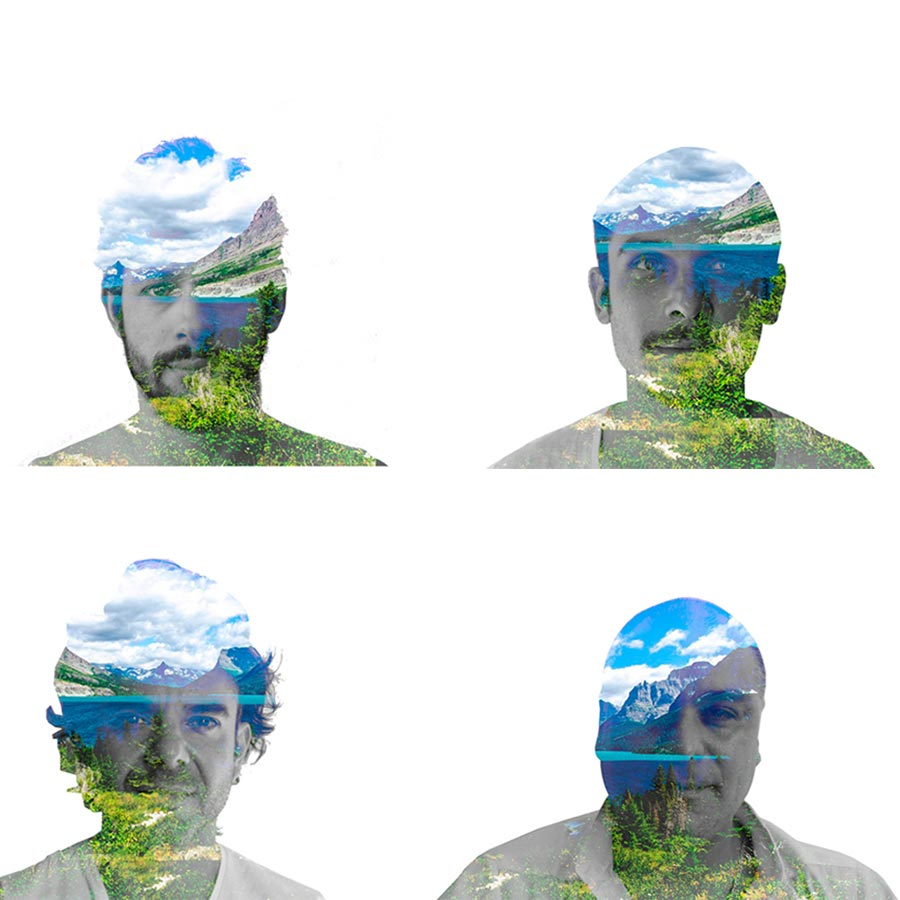

TUBA MUSIC
BRASIL/CHILE
Liderados por un brasileño, el conjunto recrea la música del gigante sudamericano.
Grupo iniciado en Brasil por el cantante y guitarrista Dyeferson Ernani de Lima, pero que a poco andar fija residencia en Santiago de Chile para desarrollar junto a músicos locales un pop rock cantado en portugués y que suma guiños al soul, la bossa nova y la fusión. El conjunto suma participaciones en el Festival Migrante y un primer compromiso a gran escala con su show previsto en WOMAD Chile 2017. Una buena oportunidad para ver en vivo a una banda que más que un proyecto musical, según ellos mismos se definen, son “una experiencia de vida”.